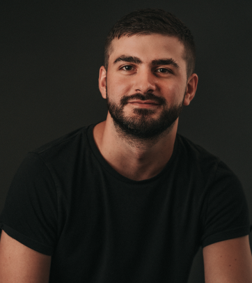
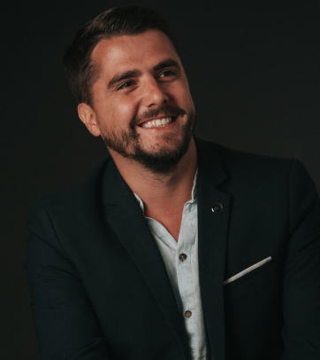
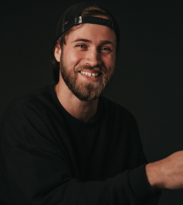
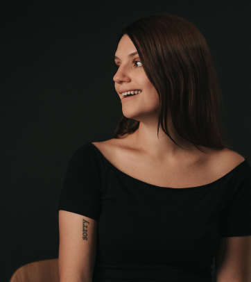

Patience, on arrive...
Le stage chez Vupar m’a permis d’apprendre de nouveaux processus de production vidéo et photo. Nottament sur la préprod et post-prod.
Découvrir les projetsL’un des plus gros shooting de mon stage a été celui pour la thalasso de Pornic fin juillet. Nous avons shooté pendant 2 jours à Pornic. Pour ce shooting, la thalasso avait prévu une maquilleuse et une mannequin, nous avons eu très peu de temps pour shooter beaucoup de mise en scène. Je me suis rendu compte que le fait de réaliser de la préprod permettait de gagner énormément de temps.
L’un de mes premiers shootings vidéo et photo était pour Yes-Yookan un nouveau produit sorti suite au cov id. J’ai eu l’occasion de réaliser un moodboard et storyboard (téléchargeable ici). Cela m’a permis d’améliorer la pre-production de mes vidéos. À travers l’écriture d’un storyboard et moodboard, j’ai remarqué qu’on perdait moins de temps pendant le tournage.
Pour le shooting de l’agence, j’ai eu l’occasion de réaliser un moodboard (téléchargeable ici) afin de définir notre style et axe de photo. Nous sommes donc partie sur un shooting clair/obscur. Je n’ai pas eu la chance d’assister à l’ensemble du shooting. Cependant, nous avons pris les soins avec Jessy d’effectuer quelques photos au préalable pour se rapprocher au maximum du moodboard.